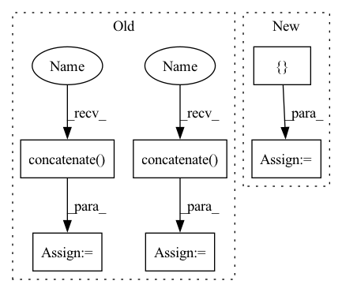

Pattern ID :23912
Before Change
if use_gripper:
if self.mirror_finger:
self.ids_controllable = np .concatenate(
(self.ids_controllable, [8]))
else:
self.ids_controllable = np .concatenate(
(self.ids_controllable, [8, 9]))
// define spaces
self.action_space = spaces.Box(-1., 1., shape=(len(self.joints_arm) + 1,))
After Change
useFixedBase=True,
flags=p.URDF_USE_SELF_COLLISION | p.URDF_MAINTAIN_LINK_ORDER)
Joint = namedtuple("Joint",
[ "initial_position", "limits", "max_velocity",
"max_torque"In pattern: SUPERPATTERN
Frequency: 3
Non-data size: 6
Instances Fragment ID: 74420684
Project Name: tmdt-buw/karolos
Commit Name: ea665c15ee927c77671f838f8404d78e77263935
Time: 2020-11-13
Author: scheiderer@uni-wuppertal.de
File Name: environments/robots/panda.py
M Class Name: Panda
N Class Name: Panda
M Method Name: __init__(6)
N Method Name: __init__(11)
M Parent Class: gym.Env
N Parent Class: gym.Env
M File Name: environments/robots/panda.py
N File Name: environments/robots/panda.py
M Start Line: 17
M End Line: 111
N Start Line: 25
N End Line: 109
Before Change
if use_gripper:
if self.mirror_finger:
self.ids_controllable = np.concatenate(
(self.ids_controllable, [8]))
else:
self.ids_controllable = np.concatenate(
(self.ids_controllable, [8, 9]))
// define spaces
self.action_space = spaces.Box(-1., 1., shape=(len(self.joints_arm) + 1,))
After Change
useFixedBase=True,
flags=p.URDF_USE_SELF_COLLISION | p.URDF_MAINTAIN_LINK_ORDER)
Joint = namedtuple("Joint",
[ "initial_position", "limits", "max_velocity",
"max_torque" Fragment ID: 74420702
Project Name: tmdt-buw/karolos
Commit Name: ea665c15ee927c77671f838f8404d78e77263935
Time: 2020-11-13
Author: scheiderer@uni-wuppertal.de
File Name: environments/robots/panda.py
M Class Name: Panda
N Class Name: Panda
M Method Name: __init__(6)
N Method Name: __init__(11)
M Parent Class: gym.Env
N Parent Class: gym.Env
M File Name: environments/robots/panda.py
N File Name: environments/robots/panda.py
M Start Line: 17
M End Line: 111
N Start Line: 25
N End Line: 109
Before Change
pred_epoch = pred
gr_truth_epoch = gr_truth
else:
pred_epoch = np.concatenate( (pred_epoch, pred), axis = 0)
gr_truth_epoch = np.concatenate( (gr_truth_epoch, gr_truth), axis = 0)
//the following line to empty the cache is helpful in order to
//reduce memory usage and avoid OOM error:
torch.cuda.empty_cache()After Change
//Do NOT use concatenation, or else you will have memory fragmentation.
num_examples = len(dataloader.dataset)
num_labels = len(self.label_meanings)
pred_epoch = np.zeros([ num_examples,num_labels Fragment ID: 74420681
Project Name: rachellea/pytorch-computer-vision
Commit Name: 92145aa25950504dbfaa3ac7ff86ddbeaa66a63f
Time: 2021-01-23
Author: rachel.draelos@gmail.com
File Name: src/run_experiment.py
M Class Name: DoExperiment
N Class Name: DoExperiment
M Method Name: iterate_through_batches(5)
N Method Name: iterate_through_batches(5)
M Parent Class: object
N Parent Class: object
M File Name: src/run_experiment.py
N File Name: src/run_experiment.py
M Start Line: 261
M End Line: 300
N Start Line: 263
N End Line: 300
Before Change
os.path.join(output_dir, f"round_{idx}"), "bias_table.csv"))
bias_table["example_id"] = bias_table["example_id"].map(
lambda x: eval(x).decode("UTF-8")) // pylint:disable=eval-used
ids = np.concatenate( list(
ds.map(lambda example: example["example_id"]).batch(
batch_size).as_numpy_iterator())) .tolist()
ids = list(map(lambda x: x.decode("UTF-8"), ids))
subgroup_labels = list(
ds.map(lambda example: example["subgroup_label"]).batch(
batch_size).as_numpy_iterator())
subgroup_labels = np.concatenate( subgroup_labels) .tolist()
df_a = pd.DataFrame({"example_id": ids, "subgroup_label": subgroup_labels})
bias_table = bias_table[bias_table["example_id"].isin(ids)]
predictions_merge = pd.merge(bias_table, df_a, on=["example_id"])After Change
num_subgroups: int,
) -> pd.DataFrame:
Evaluates model for subgroup representation vs number of rounds.
round_idx = []
subgroup_ids = []
num_samples = []
prob_representation = []
for idx in range(num_rounds): Fragment ID: 74420677
Project Name: google/uncertainty-baselines
Commit Name: f5b53459d654b40668528e806a24776b53864278
Time: 2022-11-03
Author: no-reply@google.com
File Name: experimental/shoshin/evaluate_model_lib.py
M Class Name: AnonimousClass
N Class Name: AnonimousClass
M Method Name: evaluate_active_sampling(5)
N Method Name: evaluate_active_sampling(4)
M Parent Class:
N Parent Class:
M File Name: experimental/shoshin/evaluate_model_lib.py
N File Name: experimental/shoshin/evaluate_model_lib.py
M Start Line: 34
M End Line: 59
N Start Line: 68
N End Line: 92